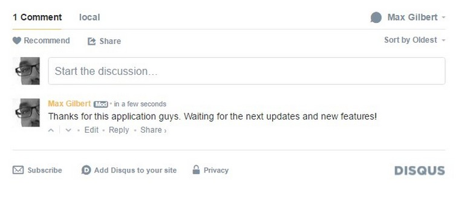

FUN FM
HOME
FEED
APP
HÖREN
Mobirise
Viele Wege führen zu FUN FM..
Ihr könnt FUN FM nach wie vor über die ganzen Sozialen Kanäle erreichen trotz Wartung
DER FEED
FUN FM GANZ SOZIAL
FOLLOW US
DISQUS COMMENTS WILL BE SHOWN ONLY WHEN YOUR SITE IS ONLINE


FOLLOW US